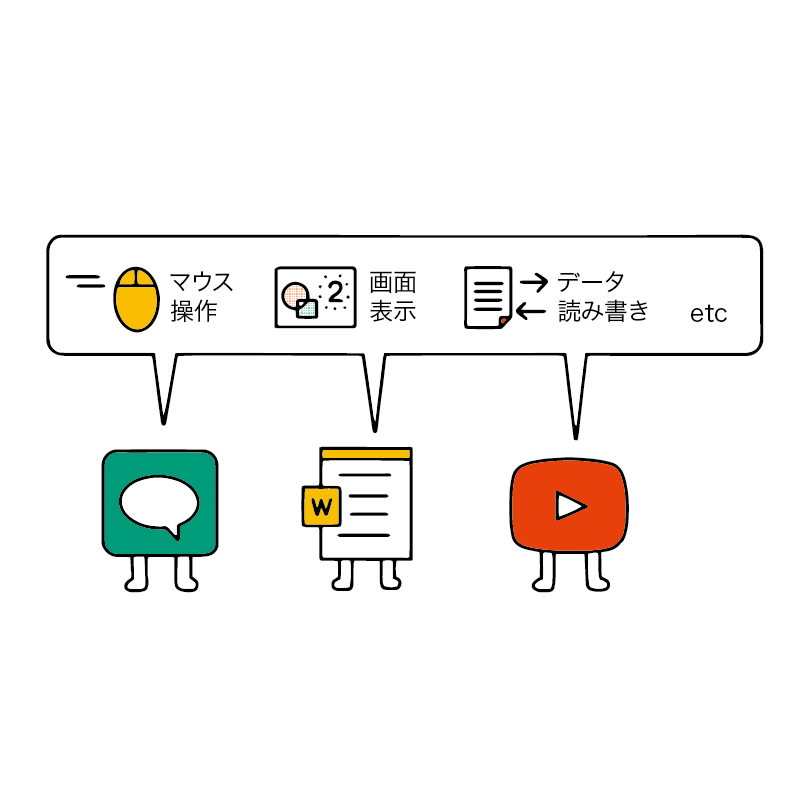

OS ってなんだろう？
前回はパソコンの部品について学びました。今回は OS について学びます。
ハードウェアとソフトウェア
パソコンやスマホに関連して、ハードウェア と ソフトウェア という言葉がよく出てくるので、OS について学ぶ前に意味を覚えておきましょう。
ハードウェア（hardware）は、物理的に存在している部品のことです。
たとえば、前回学んだ CPU や メモリ などがハードウェアの一種です。CPUやメモリはパソコンやスマホを分解してしまえば取り出すこともできるでしょう。
ソフトウェア（software）は、物理的には存在していないものです。
たとえば、スマホの「アプリ」がソフトウェアの一種です。アプリはスマホ上にデータとして存在していますが、スマホを分解したとしても物体として取り出すことはできません。
スマホやパソコンで動く「アプリ」はしばしば「アプリケーション」と呼ばれたり、「ソフトウェア」と呼ばれたりします。
では、これらは一緒のものなのでしょうか。それとも違うものなのでしょうか。どう呼ぶのが正しいのでしょうか。
「ソフトウェア」には以下の2種類があります。
- アプリケーションソフトウェア
- システムソフトウェア
実は「アプリ」は「アプリケーションソフトウェア」の略です。
「ソフトウェア」の種類のうち半分がとくに「アプリ」と呼ばれるというわけです。
ちなみに「アプリケーション」の意味は「応用する」です。人間が技術を応用するために作られたソフトウェアが「アプリ」だといえます。
OS とは
パソコンやスマホには OS（オーエス）とよばれるアプリケーションが存在します。
パソコンの OS として代表的なものが Windows や macOS です。スマホでは Android、iOS が有名です。 これらの OS の名前を聞いたことがある人もいるのではないでしょうか。
しかし、OS とは一体何なのでしょうか？
パソコンやスマホには様々な部品が搭載されたり、接続されたりしています。また、私たちはパソコンやスマホで様々なアプリを利用します。
これらの間をつなぐのが OS です。OS は オペレーティング・システム（Operating System）の略で、日本語では「基本ソフトウェア」と呼ぶこともあります。
ではまず、OS の役割 を見ていきましょう。
 OS の役割
OS の役割
複数のアプリを同時に使えるようにする
一般的に、私たちはパソコンやスマホに複数のアプリを入れて使います。また、「音楽を聞きながら SNS を見る」など、それらのアプリを同時に動かすこともよくあるでしょう。
しかし、パソコンやスマホの 処理性能（リソース） には限りがあります。そのため、音楽アプリが処理性能を全部使ってしまうと、SNSなど他のアプリが使えなくなってしまいます。
そのため、処理性能（リソース）を複数のアプリにバランス良く分配する必要があります。この機能も OS の役割です。
アプリは OS に対して、「処理性能を使わせてほしい」と依頼します。その間に別のアプリも同じようなことを依頼しているかもしれません。
このとき、依頼を受けた OS は各アプリに対してバランス良く処理性能を割り当てます。時には全体の効率や安定性を見て処理の順番を変えたり、アプリ側に待ってもらったりします。
部品（ハードウェア）のコントロールを簡単にする
OSがあることによって、アプリの開発者が楽になります。
アプリの開発が楽になることによって、パソコンを使う私たちが便利なアプリをたくさん利用できるようになるのです。
具体的に、どのように楽になるのかを見てみましょう。
パソコンに内蔵・接続されている部品（ハードウェア）は電気信号を使って情報を処理します。例えばマウスを動かしたり、画面を表示したりする際にも電気信号がやり取りされています。
これらの処理をコントロールするのは非常に難しいものです。また、パソコンの機種によって搭載されているハードウェアが異なるため、それぞれのハードウェアごとに違った処理も必要になる場合があります。
一方で、この難しい処理はどのようなアプリでも必要とされている機能でもあります。
例えば、マウスやキーボードからの入力を反映する機能はどんなアプリでも必要ですし、データを記録装置に保存したり読み込んだりといった機能も多くのアプリが必要としています。他にも画面にデータを表示する処理など、様々なものがあるでしょう。
これらの処理を行うプログラムをそれぞれのアプリ開発者が作成していると、とても非効率になってしまいます。
OS にはこういった「ハードウェアに関する難しい処理」「どのアプリでも必要とされる処理」を引き受ける役割があります。
これにより、それぞれのアプリ開発者が独自の機能の開発に集中できるようになるため、様々なアプリの開発が容易になります。その結果として、便利なアプリがたくさん開発されるようになり、私たち利用者にとっても利便性が高まります。
ここまでで OS の仕組みや存在意義について学びました。
続いて、実際の OS について学びましょう。
主なスマホ・タブレット向け OS
スマホやタブレットもコンピューターの一種であり、OS が搭載されています。
スマホやタブレット向けの OS も見てみましょう。
Android
Android（アンドロイド）は Google 社が提供している OS です。
スマホ・タブレット両方に対応しています。
Google 社は Android を自由に利用できるように公開しているため、様々なスマホメーカーが Android を搭載したスマホを販売しています。
//TODO エミュレータのスクショはかなり寂しいので、もう少し実用性の高そうなホーム画面を示したい
 Android の画面（例）
Android の画面（例）
iOS / iPad OS
iOS（アイオーエス）はアップル社が開発している OS です。 iPhone や iPod Touch は iOS で動作しています。
また、iPad OS（アイパッド・オーエス）は iPad 用の OSです。
 iPhone の画面（例）
iPhone の画面（例）
主な パソコン向け OS
一般的なパソコン向けに使われている OS として有名なものは Windows と macOS です。
また、最近は Chrome OS という新しい OS も登場しました。
それぞれの特徴を見ていきましょう。
Windows
Windows（ウィンドウズ）はマイクロソフト社によって開発・販売されている OS です。
アメリカの調査会社によれば、2020 年 5 月時点で世界のパソコンの 86.69% に Windowsが搭載されています。世界で最も普及している OS といえるでしょう。
最も普及していることもあり、利用できるアプリの数が豊富なのがメリットです。特に業務用アプリや PC ゲームなどは Windows にしか対応していないものが多くあります。
また、企業や学校などでは Windows の利用率が高いため、Windows の操作を覚えておくと仕事で困ることは少ないでしょう。
マイクロソフト社は Windows を一般に販売しているおり、様々なメーカーのパソコンに Windows が搭載されています。
 Windows の画面（例）
Windows の画面（例）
//TODO 説明イラスト: Windows はさまざまなメーカーの PC に搭載されている
 Windows はさまざまなメーカーの PC に搭載されている
Windows はさまざまなメーカーの PC に搭載されている
macOS
macOS（マックオーエス）はアップル社のパソコン「Mac」に搭載されている OS です。
2020 年 5 月時点で世界のパソコンの 9.68% が macOS を搭載しています。
プログラミングやデザインなどに適しており、IT エンジニアやデザイナーは macOS を使用している人が多いといわれます。
IT 企業やデザイン系の企業・学校では macOS を利用していることも多く、そういった企業や学校を進路として考えている人は macOS を選ぶのもよいでしょう。
アップル社は macOS を他の会社に販売していないため、macOS を使うにはアップル社のパソコン（Mac）を買う必要があります。
 macOS の画面（例）
macOS の画面（例）
//TODO 説明イラスト: macOS は Apple 社のパソコン（Mac）にしか搭載されていない
時々、「パソコン（PC）」と「Mac」が別物として扱われることがあります。そうなると「Macはパソコンじゃないの？」と疑問に感じる人もいるかもしれません。
この疑問への答えは「Mac もパソコンの一種」です。「Apple 社によって製造されたパソコンのブランド名が Mac」ということになります。
実は 2006 年頃まで、Mac は一般的な Windows パソコンとは異なるハードウェアでした。ちょっと難しい話になるのですが、Windows を搭載した一般的なパソコンのハードウェアは歴史的な経緯から「PC/AT互換機（ピーシーエーティーごかんき）」と呼ばれます。
2006 年頃までの Mac は PC/AT 互換機ではなかったので、「PC」とは別物という分類をされていました。この時も「PC」という言葉を「パソコン」の略として見た場合は「Mac は PC」と言えましたが、「PC/AT 互換機」の略として見ると「Mac は PC ではない」という状況でした。
現在の Mac はすべて PC/AT 互換機です。つまり、ハードウェアは Windows パソコンと同じ仕組みのものが使われています。そのため、現在はどんな意味であっても「Mac は PC の一種」であると言えます。
Chrome OS
Chrome OS（クローム・オーエス）は Google（グーグル） 社が開発した OS です。
Chrome OS を搭載したノートパソコンは Chromebook（クロームブック）と呼ばれます。
2020 年 5 月時点で世界のパソコンの 0.4% が ChromeOS を搭載しています。Windows や macOS に比べると、まだマイナーな OS です。
Google 社が提供するサービス（Gmail や Google ドキュメントなど）を高速かつ安全に利用できるのが特徴です。ちょっと難しい話ですが、他の OS にはない独自の安全設計が行われています。
ただし、現時点では Chrome OS に対応したアプリは非常に少なく、出来ることが限られているので一般的な「パソコン」として利用することは難しい状況です。
「出来ることが限られている」というのはデメリットである反面、不正なアプリが侵入しづらいというセキュリティ（安全）面におけるメリットだと考えることもできます。そのため、学校や企業などでは安全のために学生や従業員用のパソコンとして Chrome OS を導入しているところもあります。
2020 年時点では ChromeOS を搭載したパソコンは「特殊なパソコン」でしかありませんが、将来的には Windows や macOS と競争できるような存在になるかもしれません。
まとめ
- パソコンやスマホはハードウェアとソフトウェアによって構成されている。
- ハードウェア：物理的に存在する部品。CPUやメモリなど。
- ソフトウェア：物理的には存在していないもの。アプリなど。
- OS はソフトウェアの一種。
- OS はハードウェアとソフトウェアを繋ぐ役割。
- OS のおかげで、アプリ開発者は楽になる。
- スマホ・タブレット向けの代表的なOS
- Android
- iOS/iPad OS
- パソコン向けの代表的なOS
- Windows
- macOS
- Chrome OS